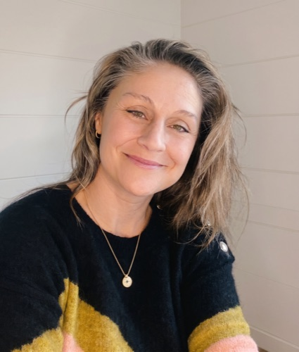
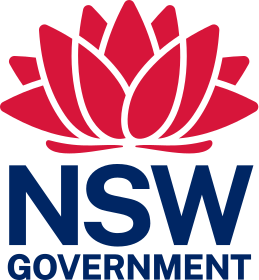
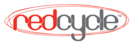
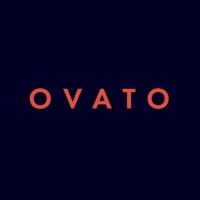
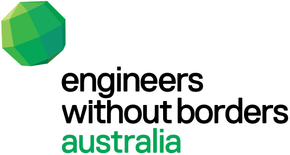

About
Helping the right ideas land with the right people.
Flux & Flow is Victoria Sharp's science and technology communication studio - clear, considered storytelling that helps organisations connect with the audiences that matter most.

We don't just make things look good. Flux & Flow helps organisations build trust, grow and engage their audience, and communicate with clarity - so the message actually gets heard, understood and remembered.
The work starts with people, not platforms. A human-centred approach digs into audience needs, motivations and behaviours, then translates that insight into strategic, engaging content that works across channels and over time - communication that feels relevant and genuinely useful, not noise.
We partner closely with clients and stakeholders from early thinking through to delivery, bringing clarity, momentum and shared ownership along the way. No disappearing acts, no big-reveal surprises - just good work, made together. We also believe inclusive, considered content creates stronger connection and belonging: embedding diverse perspectives into every project helps organisations reach wider audiences and build long-term relevance.
Hi, I'm Victoria. I'm a multi-disciplinary creative with a strong foundation in strategic branding, design, storytelling and user experience. My work focuses on helping organisations communicate complex ideas with clarity, empathy and purpose. I'm particularly drawn to education, public service and purpose-led organisations, where clear communication plays a critical role in empowering people, supporting informed decision-making and creating positive social impact - I believe deeply in the power of education and accessible information to change lives.
My career began in advertising agencies and television post-production houses in London and Sydney, delivering campaigns and content across brand, digital, motion and broadcast. In 2011 I founded my own studio, which let me work directly with clients across the private and public sectors and lead projects end-to-end - from strategy and concept development through to delivery across every channel.
I've led brand, digital and content programmes that turn complex ideas into clear, engaging communication - from large-scale marketing initiatives and state government explainers, to advertising, brand design, motion graphics and animation. Now based in Aotearoa New Zealand, I work with organisations locally and internationally, collaborating closely with stakeholders to create clear, inclusive and people-centred communication that aligns strategy with real user needs.
- CraftVisual, motion, 3D & VFX design
- ScopeStrategy through to finished production
- FormatAnimation, motion, social, print
- BasedAotearoa New Zealand, working internationally
Some of the brands I've worked with
Brands & organisations






